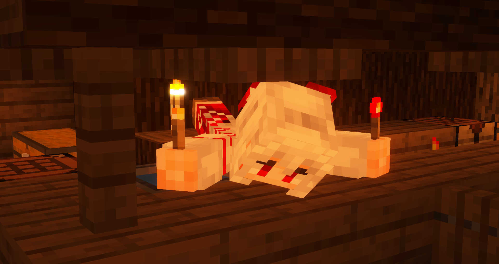

>>ERROR please tell me">
・優先：好きなキャラ > 戦闘性能
・基本的にメインストーリーしかやっていません
・アチーブメント、マップ解放等に拘っていません
ゲーム内フレンド申請は誰でもどうぞ（メッセージ下さい）
ストーリーはリアルの用事が完全に終わって、コンディションを整えてからじっくりやりたいタイプなので放置しがちです。
キャラ下げ・あらゆる作者への過度な批判・リークの類を除いて、地雷等特にありません気にしていません。
@n83ormではスクショや録画を投下しています。半分は記録のためという気持ちであげてますが反応もらえるととても嬉しいです。
招待URLは [こちら] です
どなたでも歓迎です!! 詳細・経緯は [スレッド] を参照してください
原神, HSR, ZZZ, Endfield, 魔法少女ノ魔女裁判, Minecraft, スプラ3
・始めた日：2023/12/15
・魔人任務進捗：[Ver6.3]空月の歌 第8幕
・好きなキャラ：胡桃, ナヴィア, スカーク, サンドローネ, ...
詳細をひらく >
・始めた日：2024/02/12
・開拓クエスト進捗：ピノコニー終章まで完了 二層楽園未入国
・好きなキャラ：ヘルタ, ルアン, 素裳, セイレンス, ...
詳細をひらく >
・始めた日：2025/04/12
・メインストーリー進捗：シーズン2 間章（最新）
・好きなキャラ：11号, アンビー, イゾルデ, ...
詳細をひらく >
・始めた日：2026/01/22
・メインストーリー進捗：初期リリースVerまで
・好きなキャラ：ザイヒ
詳細をひらく >
・始めた日：2026/03/21
詳細をひらく >
・初プレイ：2014/08/03(デモ版)
・分かるバージョン：1.8, 1.12
詳細をひらく >
・初プレイ：2017/10/??(spla2)
・よく使うブキ：リッター4k, ノーチラス79
詳細をひらく >
今後追加予定
候補
・ガチャ石推移
・エンドコンテンツ戦績
見たよボタン→
1度のアクセスで1回だけ押せます
260307_2320 ~ 260321_0552